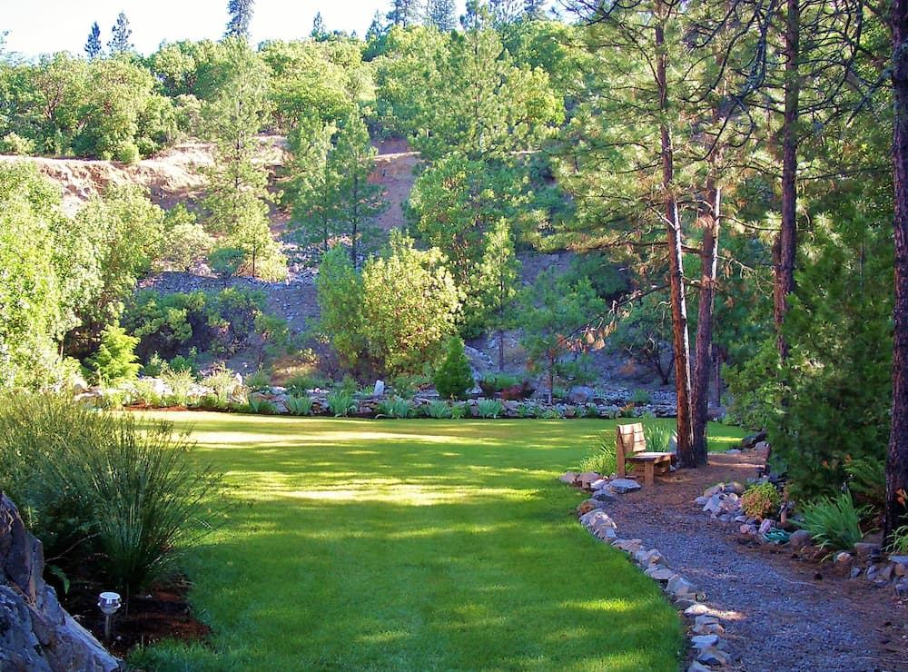
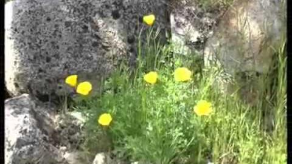
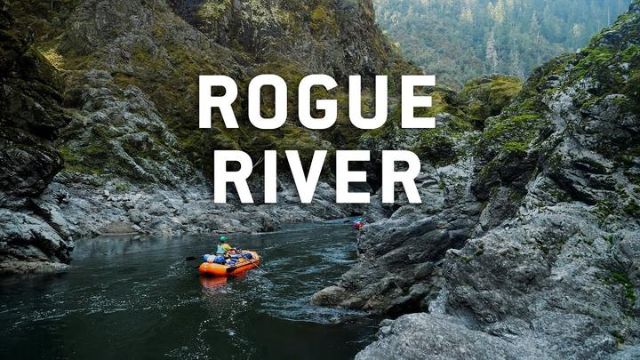
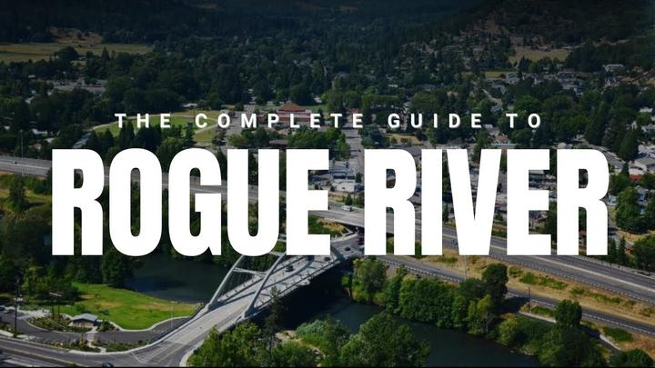
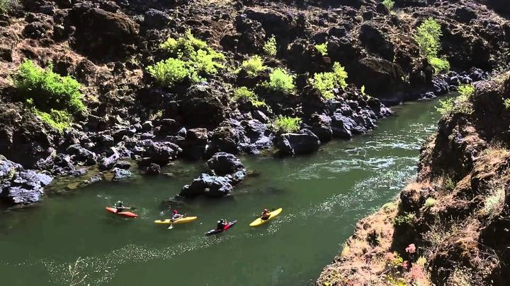
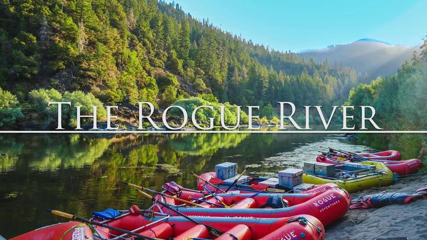
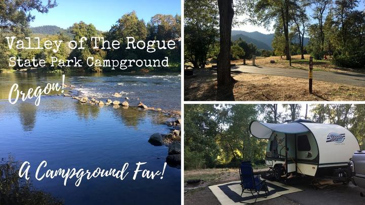
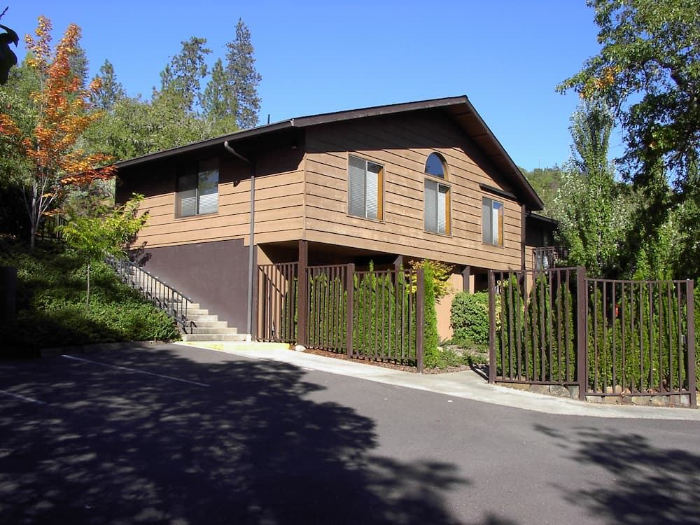
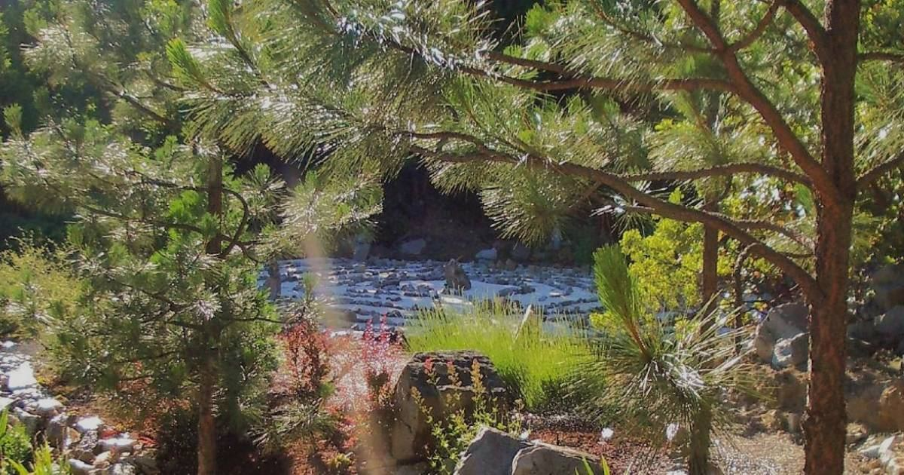
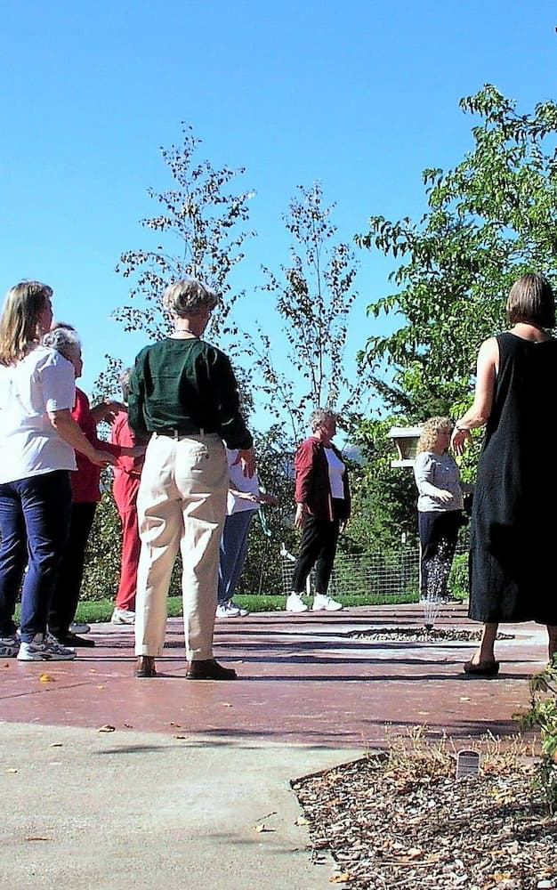

St Rita’s

✦
Gather ~ Reflect ~ Renew
Southern Oregon
A quiet place to rest, pray, and begin again.
St Rita's Retreat sits on a hill above the Rogue River Valley — fifteen simple rooms, a chapel, a granite grotto, and trails through the oaks. Come alone, or bring your group.
St Rita’s is Catholic-affiliated and welcomes guests of many backgrounds.
Watch
The hill, and the country around it
Two films made at St Rita’s itself, and six more of the Rogue River Valley it looks out over. Hover over any one of them and it starts playing; click to keep it going with sound.

St Rita’s
The valley
The valley

The valley
The valley
The valley
The valleyWelcome
Room to slow down
Some guests arrive with a plan and a schedule. Others arrive with nothing at all. Both are welcome here. Our work is simply to keep the place quiet, the rooms clean, and the days uncluttered, so that whatever brought you up the hill has room to unfold.
Ways to stay
Three kinds of retreat
Personal Retreats
A private room, unhurried days, and the freedom to keep your own rhythm. The chapel, library, lounge, and grounds are open to you throughout your stay, and spiritual direction can be arranged on request.
See the roomsGroup Retreats
Overnight accommodation for up to thirty retreatants, with meeting space, dining, and grounds that hold a group comfortably. Parishes, recovery fellowships, and ministries have returned here for years.
Plan a group retreatHosted Gatherings
Days of reflection, workshops, board retreats, and quiet celebrations. Tell us the shape of your gathering and we will help you fit it to the house, the chapel, and the grounds.
Start a conversationThe grounds
Gardens, paths, and quiet corners
The property was made for walking. Paths lead from the guest house out through the gardens and into the oaks, past benches set where the valley opens up below.
- A granite-lined grotto for prayer and stillness
- Stations of the Cross set along the hillside
- A walking labyrinth open to all guests
- Nature trails through oak and madrone
- Gardens, benches, and long views over the valley

Our patron
Saint Rita of Cascia
The house is named for Rita of Cascia, remembered in the Church as the patron of impossible causes — the one you ask when the situation has stopped making sense. Tradition holds that near the end of her life, in the dead of winter, she asked for a rose from her family’s garden, and was brought one. That rose is why a rose stands at the top of this page.
Guests of every background are welcome here, whether or not they come to pray.
On the property
There is a church here
This is a Catholic house, and it is built like one. The original friary — once home to Augustinian priests — still holds the chapel, and the meeting room carries a raised altar suitable for Mass. Outside, the Stations of the Cross run along the hillside, a granite-lined grotto sits below them, and a Chartres-style labyrinth is open to anyone who wants to walk it.
- ✝Chapel in the friary
- ⚯Altar for Mass
- ☸Stations of the Cross
- ⛰Granite grotto
- ☉Chartres labyrinth
Guests of every background are welcome, whether or not they come to pray.
Outside
Sixty-three acres to walk
The trails are the reason a lot of people come back. They run through oak and madrone and ponderosa, out to the overlooks above the Rogue River Valley, and loop back to the lawn in time for supper. Nothing is far, nothing is strenuous, and you will not meet a crowd.
Nature trails
Oak, madrone and pine, with benches where the view opens up.
The overlooks
High ground above the valley — the best of it early, before the heat.
The labyrinth
A Chartres-style walking labyrinth, open to every guest.
The lawn
Mown, shaded, and quiet. Books, naps, and long conversations.
The fireplace
In the dining hall, and worth the cooler months on its own.
Dark skies
Far enough out of town that the stars actually show up.
The table
You do not have to cook
The friary holds the kitchen and the dining hall, and meals are cooked here and served at the table — part of the stay, not an add-on. Bring anything you particularly need and there is room for it; tell us about allergies before you arrive and we will work around them. Nothing is cooked with tree nuts.
The dining hall seats a full group comfortably, with a fireplace going through the cooler months.
The retreat package
Two nights, three days
$175
per person · 2 nights, 3 days
- ✓A private room in the guest house
- ✓Meals cooked and served here
- ✓The chapel, the grotto and the labyrinth
- ✓Sixty-three acres of trails
- ✓Quiet hours, kept
Fifteen private rooms, thirty guests at most. When the house is booked, it is booked — there is only one group on the hill at a time.
“We came for a weekend and left steadier than we arrived. The quiet here does most of the work.”A returning retreat group
Where you are
Southern Oregon, just off the valley floor
We are minutes from Interstate 5 and a short drive from Medford, Jacksonville, and Ashland — close enough to reach easily, far enough that the road noise never follows you up the hill.
Guests often balance their time here with an afternoon on the Rogue River, a walk through a historic downtown, or a play in Ashland. Others never leave the grounds. Both are the right way to spend the week.
More about the settingThe place itself
Sixty-three acres, and quiet



Come see the hill for yourself
Send us your dates, your group size, and what you are hoping the time will hold. We reply to every inquiry within one to two business days.